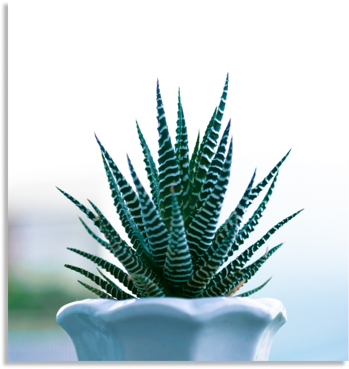
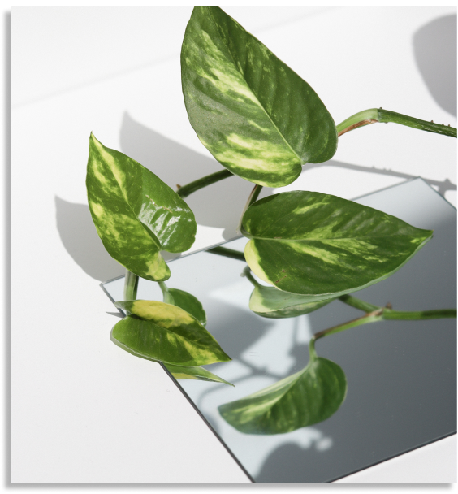
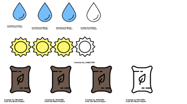

Haworthia
 Image CreditsGeneral Care
These suculent plants are usually from South Africa. What makes these plants so speacial is that they dont require alot of water, make sure the pot has good drainige and only water when the top soil is dry.
For sunshine these cute little suculents thrive in hot climate types, meaning that this plant loves sun. But be careful of burnt leaves, it can happen. Just make sure you pay attention to that.
As for the soil and fertalization you can fertalize in the spring and summer with a cactus fertalizer, when the plant is doing most of its growing. These suculents prefer sandy or slightly rocky soil, although you can get away with regular dirt especailly if it is an indoor plant.
Rubber Tree
 Image
Credits
Image
Credits
General Care
These tree like plants are speacial becuse they can grow up to 50 feet tall, be sure you are ready to give some space to this tall plant. These big green leafs take up alot of water to make them so lucious so be sure to give it a good amount of water especailly in growing season These trees can benifit from a sprits of water or a damp cloth on their leaves. With this plant it can be tough to find the right water balance, if you over water it will tell you with its leaves turning yellow.
For sunshine these trees like to have light but not too much, they prefer indirect lighting conditions, these guys are very prone to sun burn on their leaves.
As for the soil and fertalization this plant will benifit from a waek liqud fertalizer durring its primary growth season. When your tree is healthy it will take quite a bit more furtilizing than the average plant. Be careful not to fertalize too much otherwise you may cause your plannts to become root bound.
Pothos
 Image Credits General Care
These vine plants are speacial becuse they have a beautiful heart shaped leaf. These heart shaped vine plants are perfect for the new plant parent becuse they dont require alot of water. Even if you forget to water them they will survive. These plants need their soil to be completely dry other wise they are prone to root rot. You will know when these guys need watering as their leafs will start to droop and floppy.
For sunshine these vine plants are pretty easy going. They are ususally okay with indirect or bright light. Again watch out for sub burn on the leaves. These guys will usually tell you what their light needs are if they require more light they will losse the veiging pattern and go one solid green colour. If they need less light their leaves will go a pale yellow. prone to sun burn on their leaves.
As for the soil and fertalization this plant dont fertialize in the dormant winter period, they can be fertalized with a stadard plant fertalizer and on a bimonthy basis. Be sure to pay attention to these guys they can ususally communicate what they need just by looks.